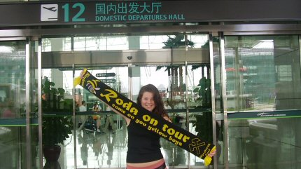
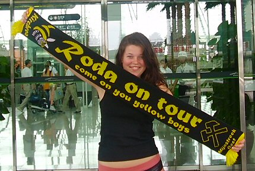
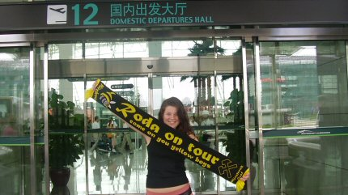
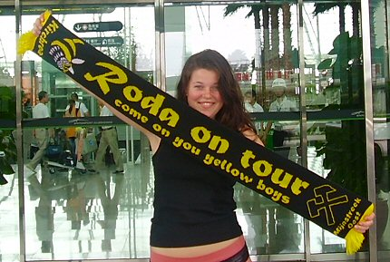
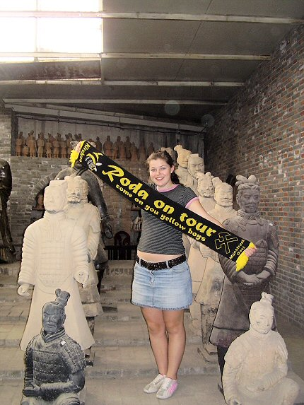
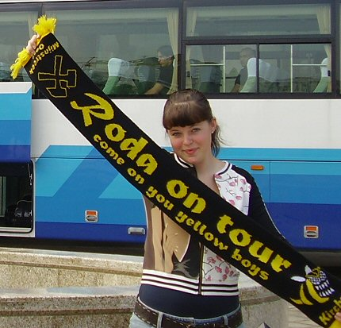
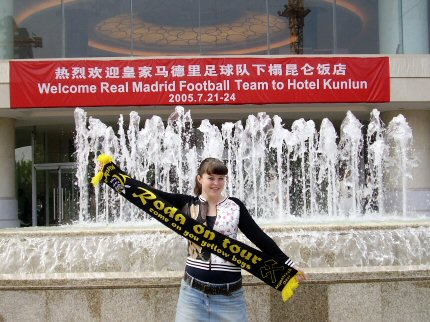
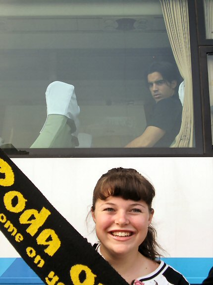
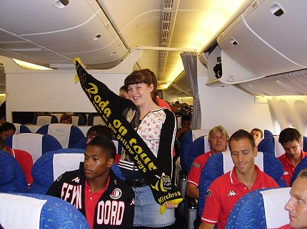

|
Roda-ambassadrice Paulinda in China |

Hier staat Paulinda voor de vertrekhal op de luchthaven van Canton.

Hier nog steeds, maar dan beter in beeld ;-)
Roda-ambassadrice Paulinda in China


Hier staat Paulinda voor de vertrekhal op de luchthaven van Canton.
Hier nog steeds, maar dan beter in beeld ;-)

Hier worden de souveniertjes van het terracotta leger in Xi'an gemaakt.

Paulinda staat hier voor de YELLOW ARMEE !!

In Beijing voor de spelersbus van Real Madrid.

Dat is nog eens een onthaal voor de Spaanse sterren! Real Madrid
wint
echter slechts met 2-3 van Beijing Hyundai.

Daar zit je dan als vedette in de spelersbus te wachten op
duizenden
hysterisch China-girls. Maar dan staat daar opeens een Roda JC-meid!
Het leven zit vol verrassingen...

Feyenoord was in China voor een toernooi in Nanjing. Paulinda
werpt zich in
het vliegtuig op als stewardes om de Rotterdammers te onthalen op een
originele Roda-campagne.
Er zullen nog meer foto's
volgen. China is groot en er zijn weinig
hot-spots, maar Paulinda doet haar best.